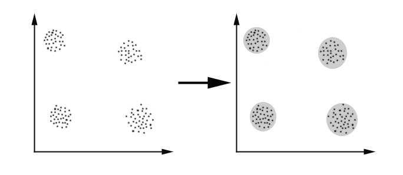
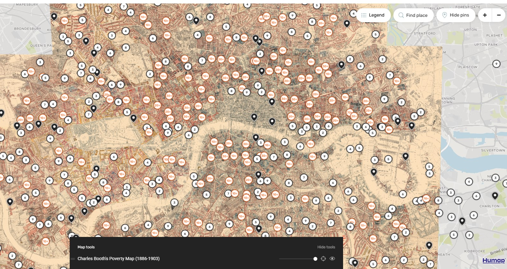
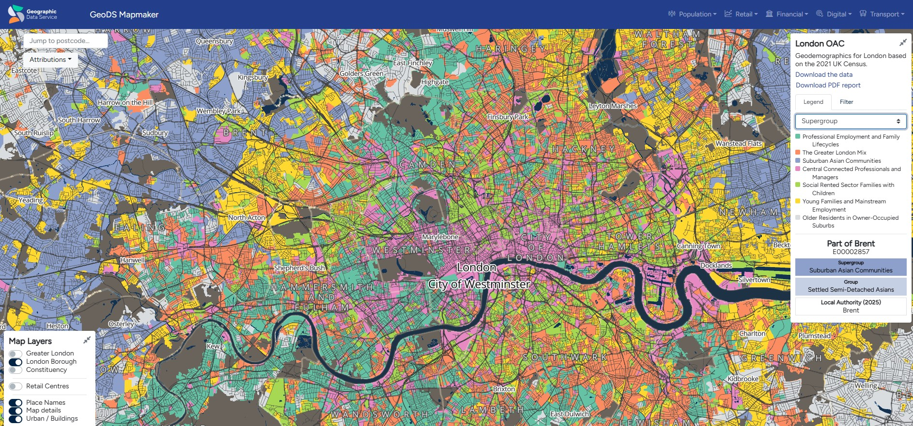
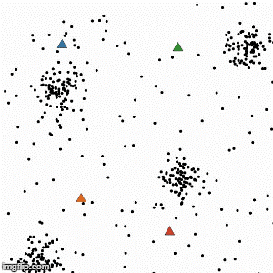
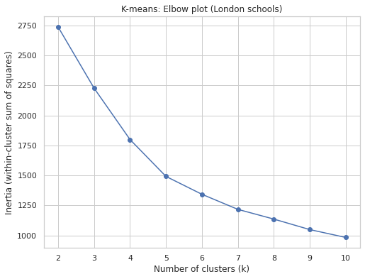
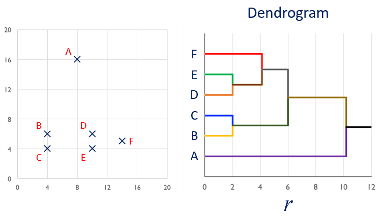
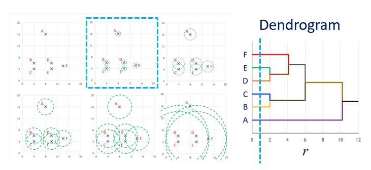
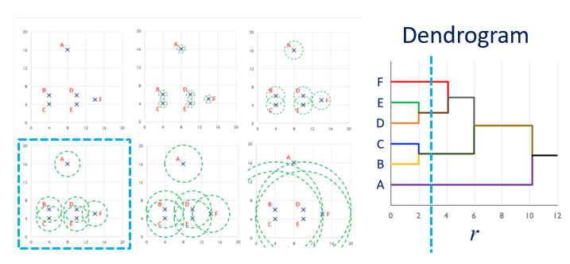
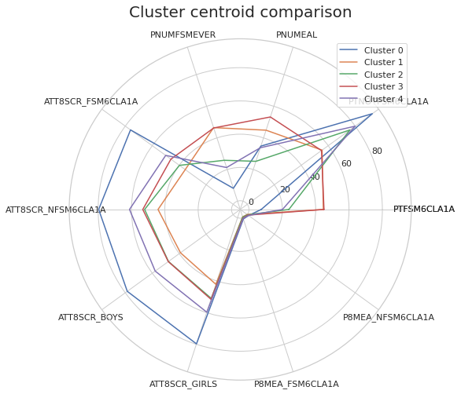
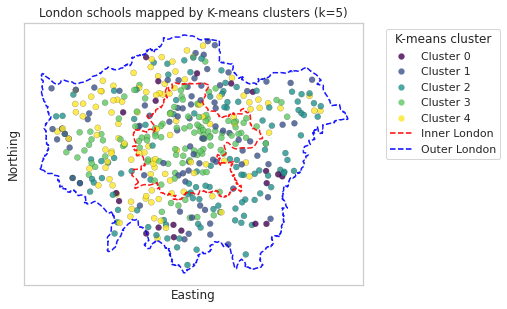

Clustering analysis
Huanfa Chen - huanfa.chen@ucl.ac.uk
29th November 2025
CASA0007 Quantitative Methods
Last week
Lecture 9 - dimensionality reduction
Looked at:
- Understand the motivation of dimensionality reduction
- Understand the principle of Principal Component Analysis
- Can apply PCA to school datasets or other datasets
This week
Objectives
- Understand the motivation and principle of clustering analysis.
- Understand K-Means and hierarchical clustering.
- Interpret the results of clustering analysis.
What is clustering
- Type of analysis that divides data points into groups based on some similarity criteria
- A cluster is a group of similar data points

Image credit: Motivation of clustering
- Discover groups of similar data points
- Assist visualisation
Examples of clustering - Booth map

Image credit: https://booth.lse.ac.uk/mapExamples of clustering - London Output Area Classification
- Clustering OAs on 70+ socio-economic variables (non-spatial); 32000 OAs clustered into 8 groups
- Clusters have obvious spatial patterns but aren’t spatially connected

Image credit: https://mapmaker.geods.ac.uk/Process of conducting clustering analysis
- Standardise variables
- Choose clustering algorithms (one or several)
- Select parameters of the clustering algorithm
- Interpret the results
- Finalise the clustering model
K-Means
Steps

Image credit: imageflip.comIterative process (Expectation-Maximisation algorithm)
- Place k centroids randomly within space
- Assign data points to nearest centroid
- Recalculate centroids as the new mean of the cluster
- Continue until centroid assignments no longer change
Implications of centroid as mean of data points in a cluster
- K-Means is incapable of handling categorical variables, as we can’t calculate the mean of a categorical variable
- K-Means is sensitive to outliers, as an outlier significantly impacts the mean of a dataset
Problems with K-Means and solutions
- Sensitive to outliers (solution: use another clustering method, or remove outliers)
- Incapable of handling categorical variables (solution: k-modes or k-prototypes)
- Requires knowledge of the number of clusters (k), which we may not know in advance (solution: Elbow method to find k)
- Sensitive to centroid initialisation, which can lead to poor solutions (solution: try multiple random initialisation and pick up the best one; initialise centroid based on data distribution)
K-Means implementation in sklearn
- class sklearn.cluster.KMeans(n_clusters=8, *, init=‘k-means++’, n_init=‘auto’, max_iter=300, tol=0.0001, verbose=0, random_state=None, copy_x=True, algorithm=‘lloyd’)
- By default, this function uses init=‘kmeans++’, which selects initial cluster centroids using sampling based on an empirical probability distribution of the points’ contribution to the overall inertia
K-Means implementation in sklearn: output
- cluster_centers_: ndarray of shape (n_clusters, n_features). Coordinates of cluster centers.
- labels_: ndarray of shape (n_samples,). Labels of each point
- inertia_: float. Sum of squared distances of samples to their closest cluster center, weighted by the sample weights if provided.
- n_iter_: int. Number of iterations run.
- n_features_in_: int. Number of features seen during fit.
Selecting K
- Try different values of k.
- Plot the inertia (within-cluster sum of squares).
- Use the elbow method to pick a reasonable k where the decrease of inertia starts to flatten out.
Selecting K - example

Result: k=5 is appropriate.Hierarchical clustering
- Two ways of hierarchical clustering
- agglomerative: bottom-up; begin with one cluster per data point and gradually merge into larger clusters.
- divisive: top-down; begin with one big cluster and gradually split into smaller clusters
Process
- Start with every point in its own cluster
- Merge points according to a linkage criterion (or distance)
- Compute centroid of new clusters
- Expand linkage threshold and continue until all points in one cluster
Advantage of hierarchical clustering
- No prior knowledge of data required
- Users can choose the level in a hierarchy structure or use Elbow methosd (similar to K-Means)
Linkage criterion (distance between two clusters)
- ward: to minimizes the variance of the clusters being merged (default setting for sklearn AgglomerativeClustering)
- average: the average of the distances of each data points of the two clusters
- complete (or maximum): the maximum distances between all data points of the two clusters
- single: the minimum of the distances between all observations of the two sets
Example of hierarchical clustering

Example of hierarchical clustering (continued)

Example of hierarchical clustering (continued)

Interpreting clustering (agnostic to clustering methods)
Cluster centroid as representative

Mapping

To check if schools belonging to a cluster are geographically clusteredKey takeaways
- Clustering analysis aims to identify groups within data points. It is a type of unsupervised learning.
- K-Means and hierarchical clustering are two popular clustering techniques.
- We can interpret clustering results via visualising the cluster centroids or mapping the clusters.
Practical
- The practical will focus on clustering analysis of the school data.
- Have you questions prepared!

© CASA | ucl.ac.uk/bartlett/casa